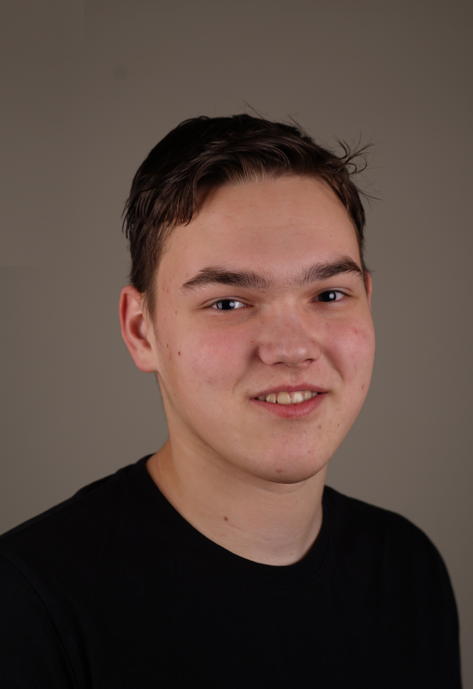

About Me
Hieronder ziet u een paar foto's van projecten die ik tot nu toe gemaakt heb en als u meer wilt zien kunt u rechts onder op 'More' klikken. En als u naar onderen scrolt ziet u meer informatie over mij.


Over Mij
Mijn naam is Alec Peters, ik ben 16 jaar oud en ik woon in Wijchen. Ik ben een eerstejaars student bij de opleiding Software Development op het Technovium, ROC Nijmegen. Ik game graag en het varieert in wat ik doe en speel. Daarom zou ik het in te toekomst leuk vinden om een game te ontwikkelen.
Sterke en Zwakke Punten
Ik kan redelijk lang aan één ding werken en mijn aandacht erbij houden. Ook kan ik nog steeds een prima of goed resultaat leveren voor opdrachten. Ik ben meestal vrij rustig, vooral bij mensen die ik niet zo goed ken. Zelf weet ik eigenlijk niet of dat goed of slecht is. Ik denk dat anderen me soms irritant kunnen vinden, omdat ik vrij snel kritiek geef, zelfs op kleine dingen.